Documentation
Introduction
This is a user’s guide to navigating the Pelham Lab’s ABCD metadata spreadsheet (metadata-xvars.xlsx). The spreadsheet contains several columns meant to help navigate the ABCD dataset while working in R or similar statistical programming languages.
table
The items within the table column refer to ABCD tables, collections of grouped ABCD variables. Datapoints from the same table were administered and/or collected together. Table names are typically made up of three short phrases indicating ABCD domain, informant, and some form of abbreviation for the name of the instrument administered. For more information on the ABCD tables, see ABCD Release Notes.
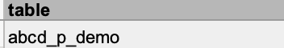
variable
The items within the variable column are unique variables that can either be found in the ABCD data set or were created by the Pelham Lab @ UCSD through manipulating variables from the ABCD data set. If a variable belongs to the ABCD data set, you may look it up in the ABCD Data Dictionary. If a variable was created by members of the Pelham Lab, you will not be able to find it in the ABCD Data Dictionary.
Variables can contain information about the type of instrument (e.g. demographics) and a number indicating the order it appears in the instrument.
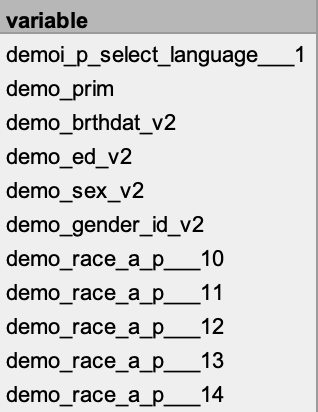
Data pertaining to the same variable can be separated into baseline and longitudinal variables. Longitudinal variables and baseline variables appear the same except for the “_l” suffix at the end of the variable name.
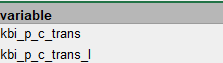
label
The items under the label column tell us what the variables measured in more detail. In the case of survey variables, for example, the label is the question as presented to the respondent. All labels are copied exactly from the ABCD Data Dictionary. Labels for variables created by the Pelham Lab will provide a description of the manipulated variable.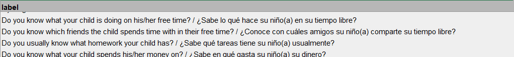
Here we can see the label provides both the questions as presented in the default English and, for those who indicated a preference for Spanish, the questions presented in Spanish after the backslash.
abcd_notes
The abcd_notes column in our metadata encompasses the entirety of the “Notes” column in the ABCD Dictionary. Often, the abcd_notes column provides information on how to interpret the numeric responses to the question. Alternatively, it may instead contain information about site location or administration method.
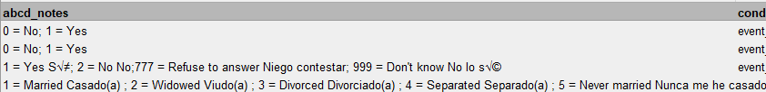
Above we can see several rows of abcd_notes that equate numeric responses like 0 and 1 to binary responses like No and Yes, but they can also correspond to multiple choice responses, as is the case in the row depicting marital status on a scale of 1-5.
condition
The condition column in metadata-xvars encompasses the entirety of the condition column from the ABCD Data Dictionary. It usually indicates the skip logic of the associated variable, such that the variable is only presented to respondents who answered a previous question in a certain way.
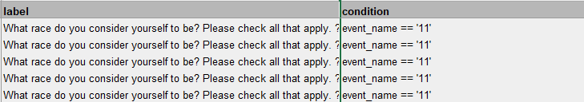
For example, here we can see that the condition column (right column) indicates that these items have skip logic where the associated variables – questions about what race(s) the informant identifies as – are only presented to respondents if their response to “event_name” was coded as 11.
has_skip_logic
A binary accompanying column to the condition column, the has_skip_logic column indicates the presence, or lack there of, of skip logic in the associated variable with a ‘yes’ or ‘no’. Variables without skip logic are presented to every applicable participant, whereas those with skip logic are only presented to participants who responded in a certain way to a previous question.
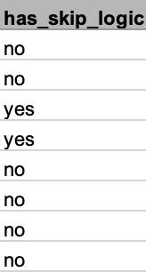
type
While all of the variables in ABCD are of clinical importance, not all of them are questions that are useful to ask a general audience*ww*. Thus, many ABCD variables would not provide much value to a short screener where questions should be applicable to a general audience. workshop this
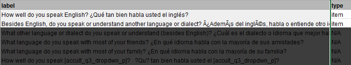
Here we can see that questions about English fluency and multilingualism are applicable to a general audience, but that questions narrowing in on these previous questions, such as questions about dialects and frequency of non-English language use are not questions that can be presented to a general audience without first being primed with another question about the topic – making their inclusion in a screener highly infeasible. workshop to make more concise
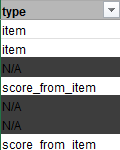
Therefore, the type column helps us sort by which variables are items that can be included on a questionnaire – item – and which variables are not – score_from_item or N/A.
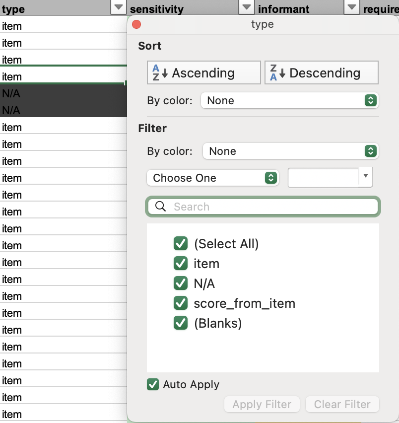
If you are interested in navigating only by item or navigating other types of variables, there is an option to filter the metadata spreadsheet by type.
sensitivity – come back when review finalized
informant
The informant column allows us to quickly tell who the respondent/subject was. There are three possible informants: parent, youth, and teacher.
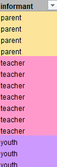
Many questions asking the same thing about the child are presented to different informants, so keeping track of exactly who is answering these questions is important when creating screeners meant for specific informants.
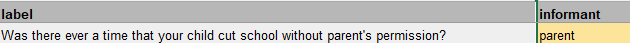
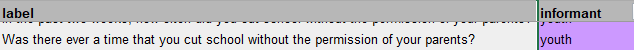
Above, we can see the same question about the child’s truancy from school is presented to two different informants with only a slight variation in wording.
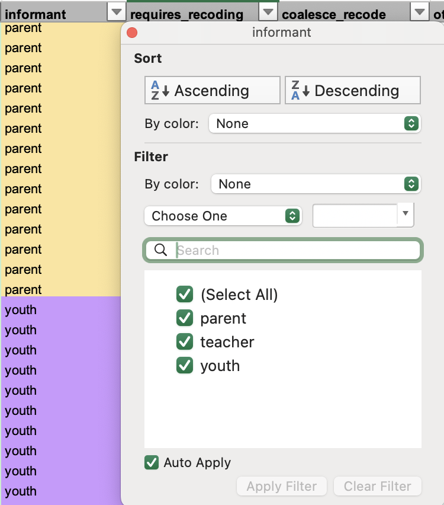
It is possible to filter the spreadsheet by informant to show only items from parties we are interested in screening.
plab_facet
The plab_facet is a sorting system specifically made to sort the items in the ABCD metadata. The plab_facet was created and reviewed by members of the Pelham Lab @ UCSD. The ABCD Release Notes categories were considered in the creation of domains, but were expanded upon or made more specific in order to classify all screening-relevant items.
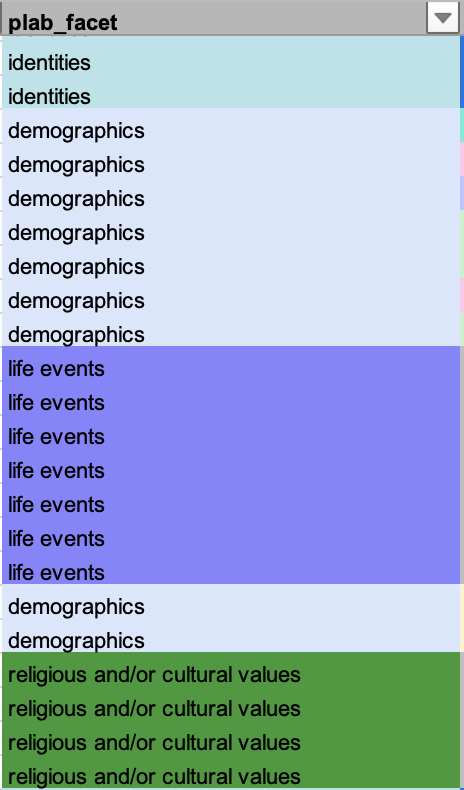
Every single variable of type “item” was sorted into a domain in the plab_facet.
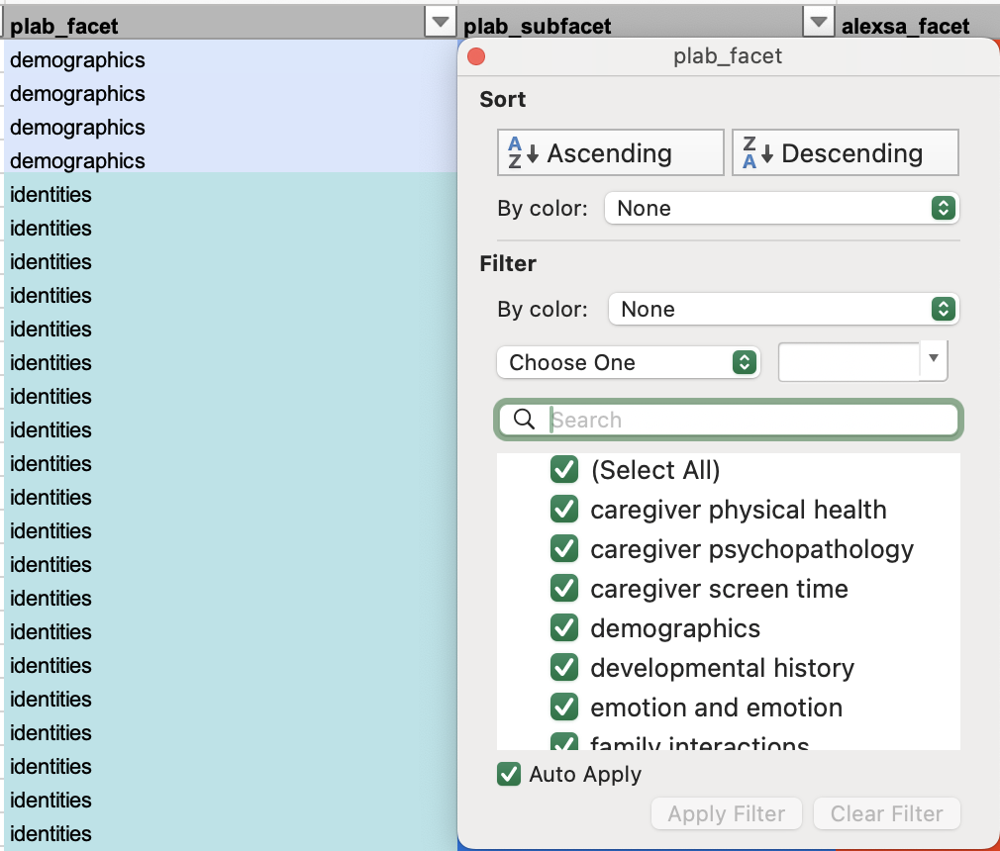
To filter by a domain of interest, click the dropdown menu at the top of the plab_facet column and select your domain of interest.
plab_subfacet
Subdomains were created and reviewed alongside the domains in plab_facet by members of the Pelham Lab @ UCSD. Subdomains were only created when clear and necessary categories within domains emerged such that all items in a domain could fall into a subdomain of at least three items.
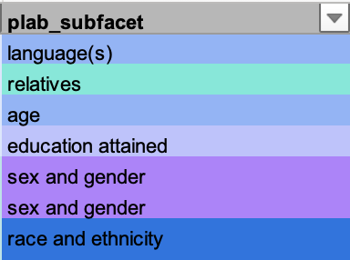 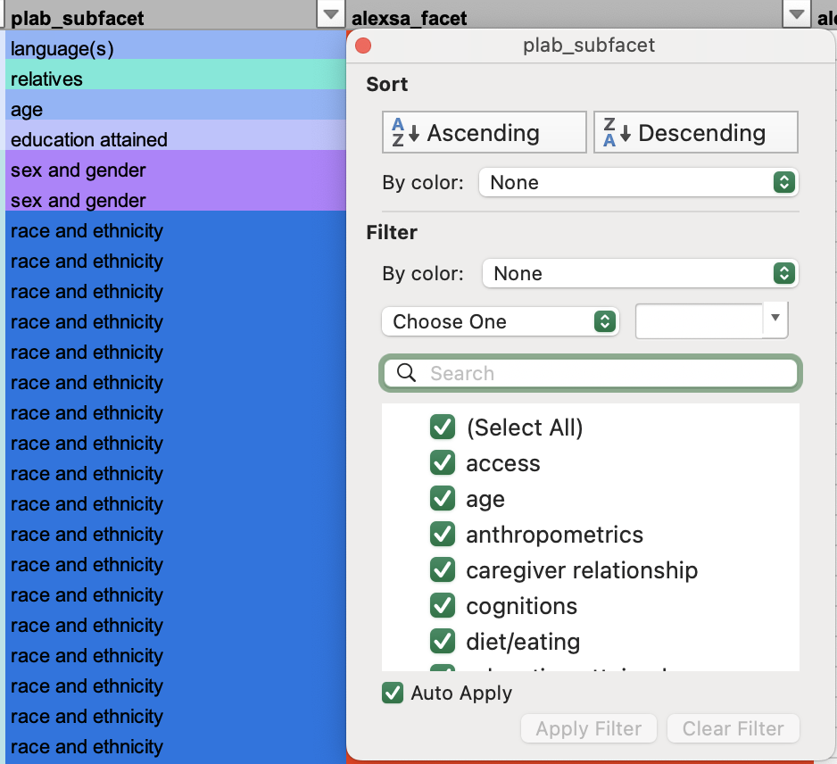
Subdomains are meant to provide further classification within domains in the plab_facet column. Thus, once the plab_facet has been filtered to the desired domain(s), you may filter even further by subdomains by clicking on the dropdown menu at the top of the plab_subfacet column and selecting your subdomain(s) of interest.
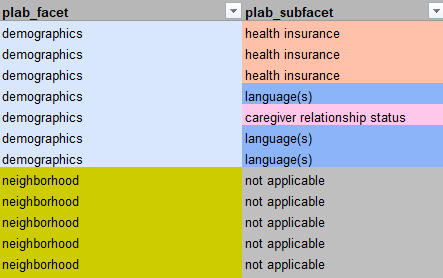
Some plab_facet domains, however, do not have any associated subdomains in the plab_subfacet. If this is the case, the column plab_subfacet should only contain “not applicable”.
alexsa_facet
The alexsa_facet utilizes the subscales from the Assessment of Liability and EXposure to Substance use and Antisocial behavior for Children (ALEXSA) assessment (Ridenour et al., 2009). The ALEXSA assessment is a child report assessment for predictors of early onset substance abuse and for antisocial behavior.
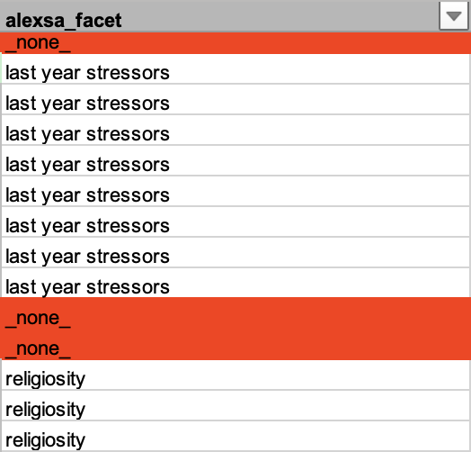
Items presented in the original ALEXSA assessment fell into one of 34 unique subscales – all of which are domains in the alexsa_facet. At least two lab members were involved in sorting items and reviewing their placement into specific subscales within the alexsa_facet.
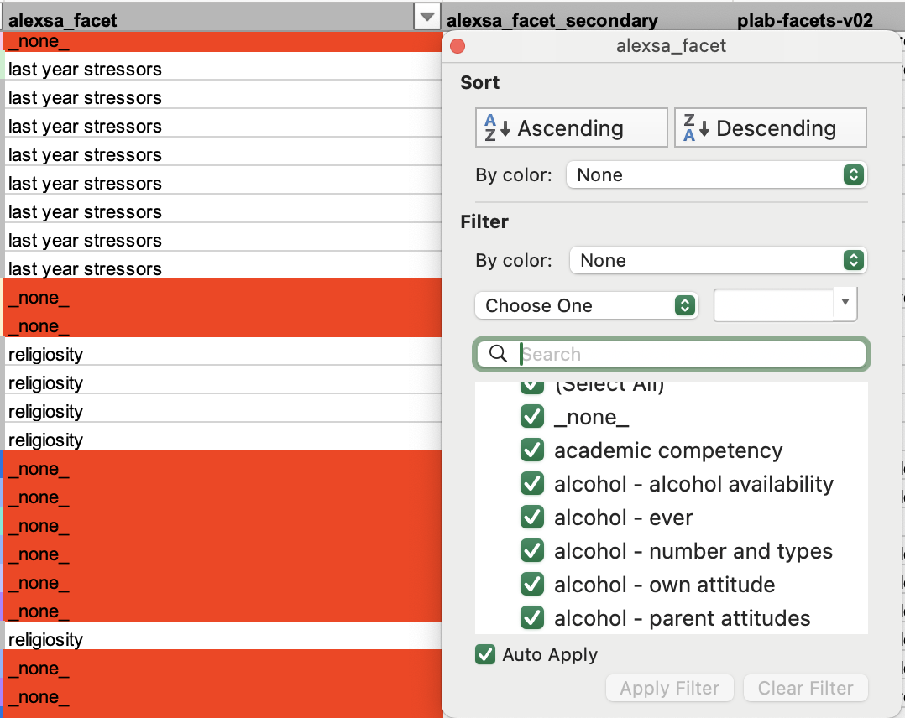
Users can filter by ALEXSA subscale by clicking on the dropdown menu at the top of the alexsa_facet column and and selecting their subscale(s) of interest.